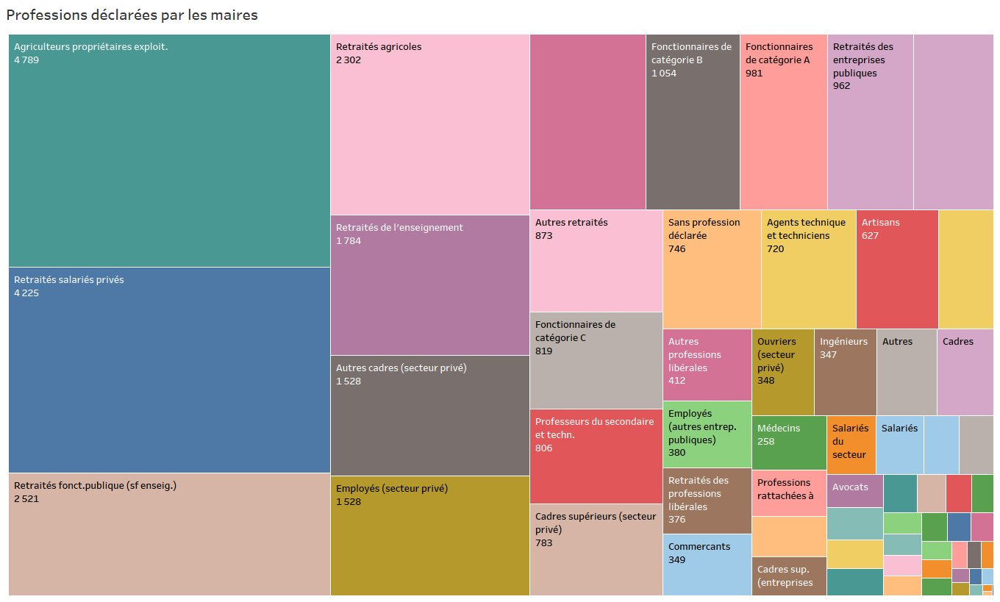
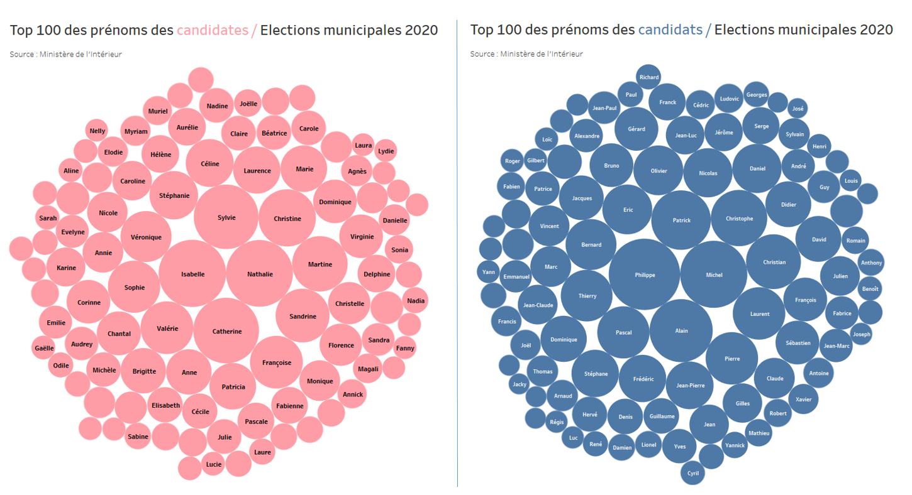
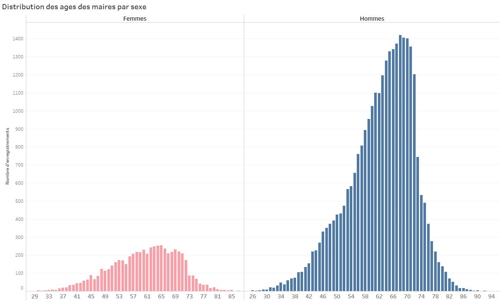
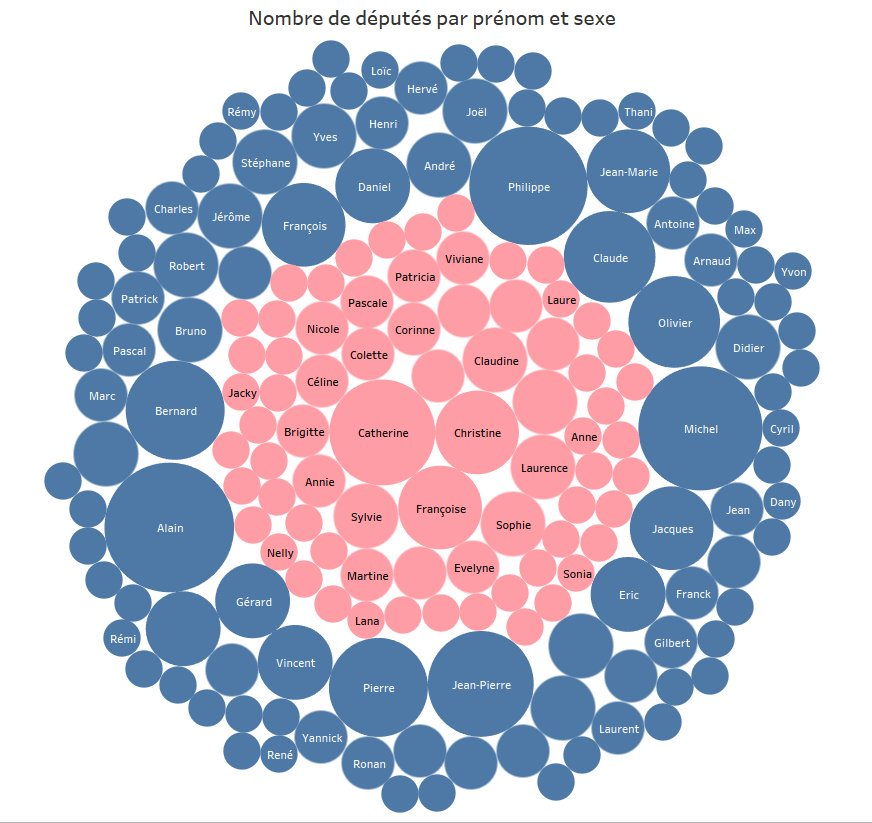
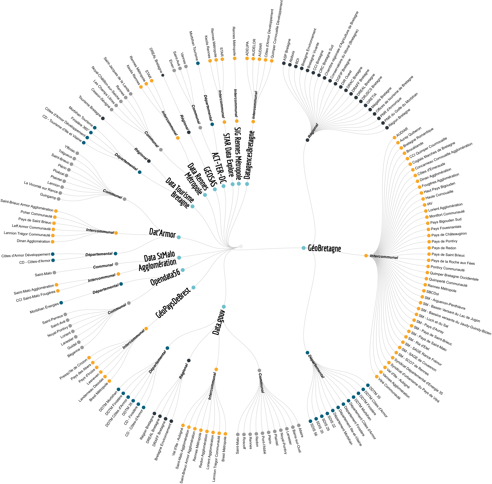
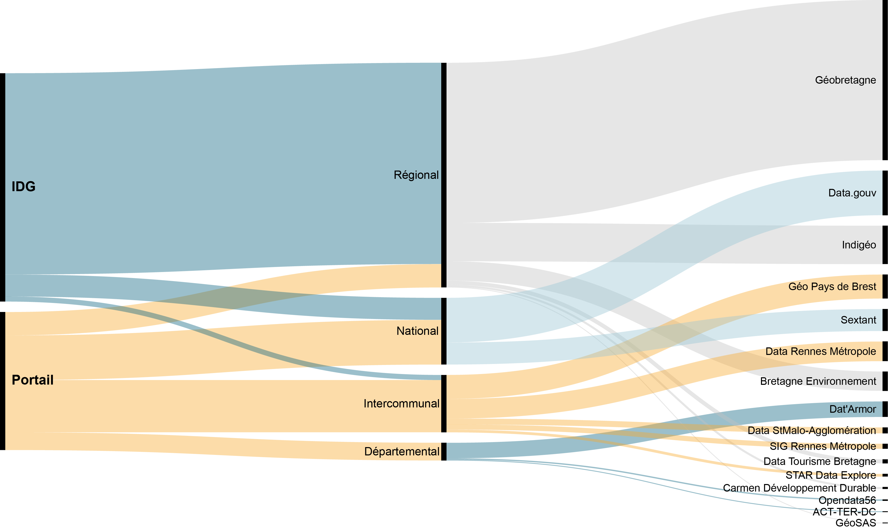

DataViz diverses et variées
Directional chords / Origines sociales des bacheliers
Bar Chart Race / Nombre de décés du COVID9 par région
Circles packing / Gares françaises et territoires
Circles packing / Régions et communes de résidence des personnels de Rennes 1
Circles packing / Régions, départements, EPCI et communes de résidence des personnels de Rennes 1
Circles Packing / Prénoms les plus populaires à Rennes en 2018
Box Plot / taux de chômages des 100 plus grandes villes de France
Tree Map / Professions des maires de France

Circle Packing / Prénoms des candidats des municipales de 2020

Bar Chart / Ages des maires de France

Circle Packing / Prénoms des députés

Circular Dendongram / Acteurs et dispositifs open data en Bretagne

Alluvial Diagram / Type, échelles et dispositifs OD en Bretagne

Word Cloud - Circle Packing / Nombres de jeux de données en open data des acteurs bretons